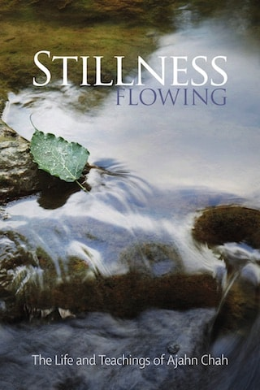

Table of Contents
Chapter 3: Off the Beaten Track 123
Chapter 4: A Life Inspiring 161
Chapter 6: The Heart of the Matter 315
Chapter 7: Polishing the Shell 383
Chapter 8: From Distant Lands 481
Chapter 9: Dying to the World 551
Event: Recollections of Ajahn Chah – September 2010
Event: The New Ajahn Chah Biography – April 2018
Outline of the day; progress of Ajahn Jayasaro’s biography of Ajahn Chah. [Ajahn Jayasaro] [Dhamma books] [Ajahn Chah]
Reference: Stillness Flowing by Ajahn Jayasaro
Recollections of Ajahn Chah [2010], Session 1, Excerpt 2
“Can Ajahn Pasanno teach us how Ajahn Chah teaches or gives techniques on physical states and mental states? Can you tell us more about Ajahn Chah’s biography, for example, when and how Ajahn Chah wanted to become a monk?” Answered by Ajahn Pasanno. [Ajahn Chah] [Body/form] [Heart/mind] // [Christianity] [Conditionality]
Recollection: Ajahn Chah engaged in conversation with the villagers before the meal to reveal the junior monks’ desires around food. [Idle chatter] [Food] [Sensual desire]
Advice from Ajahn Chah: “Don’t admonish anybody before the meal.” [Admonishment/feedback]
Update about the progress on the new Ajahn Chah biography. [Dhamma books] [Ajahn Jayasaro] [Ajahn Kovilo]
Reference: Stillness Flowing by Ajahn Jayasaro
Story: Nine year old Ajahn Chah goes to the monastery after getting fed up with household chores. [Culture/Thailand] [Geography/Thailand] [Faith] [Monasteries] [Family] [Work]
Thanksgiving Retreat 2016, Session 2, Excerpt 9
Ajahn Pasanno introduces the Ajahn Chah Compilation Video and Stillness Flowing by Ajahn Jayasaro. [Ajahn Chah] [Dhamma books] // [Goodwill] [Compassion] [Personal presence] [History/Western Buddhist monasticism]
Reference: The Ajahn Chah Compilation Video on YouTube
Reference: The Buddha Comes to Sussex (BBC, 1979) on Youtube [History/Western Buddhism] [Chithurst]
Reference: The Mindful Way (BBC, 1977) on YouTube [Wat Pah Pong]
The New Ajahn Chah Biography [2018], Session 1
Story: The 20-year history of Stillness Flowing by Ajahn Jayasaro. Told by Ajahn Pasanno. [Dhamma books] [Ajahn Jayasaro] [Ajahn Chah] // [Sickness] [Translation]
Recollections of Ajahn Chah: 100th Birthday Anniversary Celebration [2018], Session 1, Excerpt 1
Comment: I found reading Stillness Flowing by Ajahn Jayasaro an amazing journey. … [Dhamma books] [Ajahn Chah]
Response by Ajahn Pasanno. [Ajahn Jayasaro]
Recollections of Ajahn Chah: 100th Birthday Anniversary Celebration [2018], Session 3, Excerpt 15
Reading from Stillness Flowing by Ajahn Jayasaro, pp. 19-20: The culture of Northeast Thailand. Read by Ajahn Pasanno. [Culture/Thailand ] [Geography/Thailand]
Recollections of Ajahn Chah: 100th Birthday Anniversary Celebration [2018], Session 1, Excerpt 3
Reading from the draft biography: Ajahn Chah’s birthplace and early life. Read by Ajahn Pasanno. [Culture/Thailand] [Family] [Children] [Ajahn Chah]
Reference: Stillness Flowing by Ajahn Jayasaro, p. 22
Recollections of Ajahn Chah [2010], Session 1, Excerpt 4
Reading from the draft biography: Young Chah plays at being a monk. Read by Ajahn Amaro. [Ajahn Chah] // [Ajahn Jayasaro] [Almsfood] [Five Precepts]
Reference: Stillness Flowing by Ajahn Jayasaro, p. 23
Remembering Ajahn Chah Weekend [2001], Session 9, Excerpt 3
Reading from the draft biography: Chah decides to enter the village monastery at age nine. Read by Ajahn Amaro. [Types of monks] [Monastic life/Motivation] [Ajahn Chah] // [Conditionality] [Conscience and prudence] [Truth] [Generosity] [Kamma] [Work]
Reference: Stillness Flowing by Ajahn Jayasaro, p. 25
Remembering Ajahn Chah Weekend [2001], Session 9, Excerpt 4
Reading from the draft biography: At the age of nine, Ajahn Chah asks to go to the village monastery. Read by Ajahn Pasanno. [Family] [Novices] [Ajahn Chah]
Reference: Stillness Flowing by Ajahn Jayasaro, p. 25
Recollections of Ajahn Chah [2010], Session 1, Excerpt 5
Reading from the draft biography: Chah falls in love. Read by Ajahn Amaro. [Relationships] [Ajahn Chah] // [Family] [Commerce/economics] [Restlessness and worry]
Reference: Stillness Flowing by Ajahn Jayasaro, p. 34
Remembering Ajahn Chah Weekend [2001], Session 9, Excerpt 6
Reading from the draft biography: Ajahn Chah falls in love. Read by Ajahn Pasanno. [Relationships] [Ajahn Chah] // [Culture/Thailand] [Spiritual urgency] [Sensual desire]
Reference: Stillness Flowing by Ajahn Jayasaro, p. 34
Recollections of Ajahn Chah [2010], Session 1, Excerpt 7
Reading from the draft biography: Ajahn Chah ordains at age 20. Read by Ajahn Pasanno. [Ordination] [Ajahn Chah] // [Culture/Thailand] [Military] [Merit] [Spiritual urgency] [Learning] [Pāṭimokkha]
Reference: Stillness Flowing by Ajahn Jayasaro, p. 37
Recollections of Ajahn Chah [2010], Session 1, Excerpt 8
Reading from the draft biography: Ajahn Chah obsesses about food. Read by Ajahn Pasanno. [Food] [Sensual desire] [Ajahn Chah]
Reference: Stillness Flowing by Ajahn Jayasaro, p. 39
Quote: “Close the doors. I’m going to eat noodles today!” — Ajahn Chah. Quoted by Ajahn Pasanno.
Recollections of Ajahn Chah [2010], Session 1, Excerpt 9
Reading from the draft biography: Ajahn Chah’s dying father asks him to remain in robes for life. Read by Ajahn Amaro. [Sickness] [Recollection/Death] [Parents] [Monastic life] [Ajahn Chah] [Determination] // [Learning] [Culture/Thailand] [Unattractiveness] [Forest versus city monks] [Sutta] [Spiritual urgency]
Quote: “I dedicate my body and mind, my whole life, to the practice of the Lord Buddha’s teachings in their entirety. I will realize the truth in this lifetime … I will let go of everything and follow the teachings. No matter how much suffering and difficulty I have to endure I will persevere, otherwise there will be no end to my doubts. I will make this life as even and continuous as a single day and night. I will abandon attachments to mind and body and follow the Buddha’s teachings until I know their truth for myself.” — Ajahn Chah. [Buddha] [Dhamma] [Practicing in accordance with Dhamma] [Knowledge and vision] [Truth] [Relinquishment] [Suffering] [Energy] [Doubt] [Continuity of mindfulness]
Reference: Stillness Flowing by Ajahn Jayasaro, p. 40
Remembering Ajahn Chah Weekend [2001], Session 9, Excerpt 8
Reading from the draft biography: Ajahn Chah accepts his dying father’s request to stay as a monk for life. Read by Ajahn Pasanno. [Parents] [Monastic life/Motivation] [Sickness] [Death] [Ajahn Chah ] [Determination ] // [Mindfulness of body] [Spiritual urgency ] [Saṃsāra]
Reference: Stillness Flowing by Ajahn Jayasaro, p. 40
Quote: “I dedicate my body and mind, my whole life, to the practice of the Lord Buddha’s teachings in their entirety. I will realize the truth in this lifetime … I will let go of everything and follow the teachings. No matter how much suffering and difficulty I have to endure I will persevere, otherwise there will be no end to my doubts. I will make this life as even and continuous as a single day and night. I will abandon attachments to mind and body and follow the Buddha’s teachings until I know their truth for myself.” — Ajahn Chah. [Determination ] [Ardency] [Patience] [Doubt] [Continuity of mindfulness] [Relinquishment] [Knowledge and vision]
Reference: Stillness Flowing by Ajahn Jayasaro, p. 42
The singular quality of Ajahn Chah’s resolution. Reflection by Ajahn Pasanno. [Determination ]
Recollections of Ajahn Chah [2010], Session 1, Excerpt 10
Reading: Stillness Flowing by Ajahn Jayasaro, p. 40-41: Ajahn Chah’s father’s dying request Read by Ajahn Pasanno. [Parents] [Death] [Monastic life/Motivation] [Ajahn Chah] // [Culture/Thailand] [Meditation]
The New Ajahn Chah Biography [2018], Session 2, Excerpt 2
Reading: “1946-1954: The Tudong Years” from the draft biography of Ajahn Chah. Read by Ajahn Cunda.
Reference: Stillness Flowing by Ajahn Jayasaro, p. 44.
Our Roots in the Thai Forest Tradition [2014], Session 44
Reading from the draft biography: Ajahn Mun’s character and legacy. Read by Ajahn Pasanno. [Ajahn Mun ] [Thai Forest Tradition] [Ajahn Chah] // [Culture/Thailand] [Perception of a samaṇa] [Great disciples] [Ascetic practices] [Rains retreat] [Almsround] [Psychic powers] [Discernment] [Liberation] [History/Thai Buddhism]
Reference: Stillness Flowing by Ajahn Jayasaro, p. 52
Story: Ajahn Mun disappears after being appointed abbot. [Abbot] [Seclusion]
Recollections of Ajahn Chah [2010], Session 1, Excerpt 12
Reading from the draft biography: Ajahn Chah visits Ajahn Mun. Read by Ajahn Pasanno. [Ajahn Mun] [Tudong] [Ajahn Chah ] // [Relics] [Cleanliness] [Perception of a samaṇa] [Personal presence] [Vinaya] [Conscience and prudence] [Teaching Dhamma] [Knowing itself] [Nature of mind] [Conventions] [Unconditioned] [Faith]
Reference: Stillness Flowing by Ajahn Jayasaro, p. 54
Recollections of Ajahn Chah [2010], Session 1, Excerpt 13
Reflection by Ajahn Pasanno: Why Ajahn Chah spent only three days with Ajahn Mun. [Ajahn Mun] [Ajahn Chah] // [Thai sects] [Politics and society] [Psychic powers] [Dreams]
Reference: Stillness Flowing by Ajahn Jayasaro, p. 61
Quote: “Mahānikāya needs good monks as well.” — Ajahn Mun to Ajahn Chah.
Recollections of Ajahn Chah [2010], Session 7, Excerpt 4
Reading from the draft biography: Ajahn Chah’s mentors: Ajahn Tongrat and Ajahn Kinaree Read by Ajahn Pasanno. [Mentoring] [Ajahn Tongrat] [Ajahn Kinaree] [Ajahn Chah] // [Personality] [Respect for elders] [Upatakh] [Tudong] [Visiting holy sites] [Robes] [Relinquishment] [Monastic crafts] [Pace of life] [Craving]
Reference: Stillness Flowing by Ajahn Jayasaro, p. 73
Story: Ajahn Chah meets Ajahn Tongrat.
Story: Ajahn Mun teaches his teacher, Ajahn Sao. [Ajahn Sao] [Ajahn Mun] [Liberation]
Recollections of Ajahn Chah [2010], Session 7, Excerpt 5
Reading: “A Simple Monk” from the draft biography of Ajahn Chah. Read by Ajahn Kaccāna.
Reference: Stillness Flowing by Ajahn Jayasaro, p. 73. (The draft biography contains many details not in the final text.)
Our Roots in the Thai Forest Tradition [2014], Session 45
“Did Ajahn Chah use asubha practice during his battle with lust?” Answered by Ajahn Pasanno. [Ajahn Chah] [Sensual desire] [Unattractiveness] // [Ajahn Pasanno] [Impermanence] [Patience] [Conditionality]
Reference: Stillness Flowing by Ajahn Jayasaro, p. 81.
Our Roots in the Thai Forest Tradition [2014], Session 45, Excerpt 6
Reading from the draft biography: Ajahn Chah leaves his companions and stays alone. Read by Ajahn Pasanno. [Tudong] [Seclusion] [Culture/Thailand] [Ajahn Chah] // [Spiritual friendship]
Reference: Stillness Flowing by Ajahn Jayasaro, p. 89
Quote: “Where is the good person? He lies within us. If we’re good, then wherever we go, the goodness stays with us.” — Ajahn Chah. [Virtue] [Blame and praise]
Recollections of Ajahn Chah [2010], Session 7, Excerpt 6
Readings by Ajahn Amaro:
The Island by Ajahn Pasanno and Ajahn Amaro, Chapter 8, pp. 141-142:
Stillness Flowing by Ajahn Jayasaro, pp. 90-91.
Sutta: Snp 4.11 (Venerable H. Saddhatissa translation).
Readings from The Island [2025], Session 41
Comment: The separation between the mind and the sense/mind objects can be helpfully contemplated at multiple levels of acuity. Contributed by Ajahn Kaccāna. [Nature of mind] [Knowing itself] [Sense bases] // [Nibbāna] [Ajahn Chah]
Sutta: AN 11.9.
Reference: Stillness Flowing by Ajahn Jayasaro, pp. 90-91.
Response by Ajahn Amaro. [Hearing the true Dhamma] [Perception] [Etymology]
Quote: “The Five Khandhas exist, but they aren’t real. The Dhamma is real, but it doesn’t exist.” — Ajahn Paññāvaḍḍho. [Ajahn Paññāvaḍḍho] [Aggregates] [Dhamma]
Response by Ajahn Pasanno.
Quote: “Bright, loud, and mobile is the false; subtle and indistinct is the true.” — Master Hsuan Hua to Ajahn Amaro in a dream. Quoted by Ajahn Amaro. [Master Hsuan Hua] [Ajahn Amaro] [Dreams] [Truth]
Readings from The Island [2025], Session 42, Excerpt 1
Reading: Stillness Flowing by Ajahn Jayasaro, pp. 93-97: Ajahn Chah trains his mind while making a bowl lid. Read by Ajahn Pasanno. [Work] [Meditation] [Almsbowl] [Ajahn Chah]
Recollections of Ajahn Chah: 100th Birthday Anniversary Celebration [2018], Session 1, Excerpt 13
“When Ajahn Chah was making the lid for his bowl (Stillness Flowing by Ajahn Jayasaro, p. 94) and he stopped himself from thinking about working while he was resting or meditating … how did that flow for him?” Answered by Ajahn Pasanno. [Almsbowl] [Proliferation] [Fierce/direct teaching] [Ajahn Chah] // [Discernment] [Patience] [Learning] [Humor]
Quote: “If you can’t laugh at yourself as a practitioner, then you’re sunk.”
Story: Ajahn Chah makes a large ball of sticky rice for himself then comments, “When I was younger, I used to be able to pack it; I’m getting old now.” [Ageing] [Food]
Recollections of Ajahn Chah: 100th Birthday Anniversary Celebration [2018], Session 3, Excerpt 20
Reading: Stillness Flowing by Ajahn Jayasaro, pp. 97-98: “Teachings from a Barking Deer.” Read by Ajahn Pasanno. [Tudong] [Sickness] [Discernment] [Ajahn Chah]
Recollections of Ajahn Chah: 100th Birthday Anniversary Celebration [2018], Session 1, Excerpt 14
“Can you please tell us about dreams? Do they reveal our defilements? Do you have any interesting dream stories?” Answered by Ajahn Pasanno. [Dreams] [Unwholesome Roots] [Ajahn Pasanno] // [Culture/Thailand]
Story: Two Western monks ask Ajahn Chah at what point he became confident that he would have a major realization. Ajahn Chah describes three dreams in response. [Ajahn Chah] [Dhamma books] [Wat Pah Nanachat] [Culture/West]
Reference: Stillness Flowing by Ajahn Jayasaro, p. 111-113.
Thanksgiving Retreat 2011, Session 6, Excerpt 20
Reading from the draft biography: Ajahn Chah in the early years: spare, stern, and vigorous. Read by Ajahn Pasanno. [Personality] [Personal presence] [Ardency] [Ascetic practices] [Ajahn Chah] // [Similes]
Reference: Stillness Flowing by Ajahn Jayasaro, p. 137
Quote: “Nibbāna lies on the shores of death.” — Ajahn Chah. [Nibbāna] [Death]
Recollections of Ajahn Chah [2010], Session 11, Excerpt 6
I was the first Westerner, so he gave me an enormous amount of attention for the first two or three years. Reflection by Ajahn Sumedho. [History/Western Buddhist monasticism] [Ajahn Sumedho] [Mentoring] [Ajahn Chah] // [Ajahn Mahā Amorn] [Other Thai Forest teachers] [Pāṭimokkha] [Conceit] [Paul Breiter] [Truth] [Compassion] [Humor]
Story: Venerable Varapañño chants the Pāṭimokkha better than Ajahn Sumedho. [Competitiveness] [Jealousy]
Note: The story that Ajahn Sumedho didn’t tell is probably told in Stillness Flowing by Ajahn Jayasaro, p. 189.
Remembering Ajahn Chah Weekend [2001], Session 30, Excerpt 2
“Ajahn Chah took Ajahn Mahā Amon and Ajahn Sumedho to visit Luang Ta Mahā Boowa and Ajahn Kaew. What happened?” Answered by Ajahn Pasanno. [Ajahn Chah] [Ajahn Mahā Amorn] [Ajahn Sumedho] [Ajahn Khao] // [Teaching Dhamma] [Simplicity]
Story: Ajahn Chah turned on a tape recorder, but the only part of the conversation that was recorded was when Ajahn Kaew farted. [Technology] [Psychic powers]
Note: A partially similar story appears in Stillness Flowing by Ajahn Jayasaro, p. 189.
Our Roots in the Thai Forest Tradition [2014], Session 11, Excerpt 1
Reading: Stillness Flowing by Ajahn Jayasaro, pp. 325-326: “The Single Chair.” Read by Ajahn Pasanno. [Meditation] [Mindfulness]
Recollections of Ajahn Chah: 100th Birthday Anniversary Celebration [2018], Session 4, Excerpt 3
Reading: Stillness Flowing by Ajahn Jayasaro, pp. 326-327: Ajahn Chah’s teachings about meditation posture. Read by Ajahn Pasanno. [Posture/Sitting] [Ajahn Chah]
Recollections of Ajahn Chah: 100th Birthday Anniversary Celebration [2018], Session 4, Excerpt 4
Reading: Stillness Flowing by Ajahn Jayasaro, pp. 370-373: Ajahn Chah’s perspective on samatha and vipassanā. Read by Ajahn Pasanno. [Calming meditation] [Insight meditation] [Ajahn Chah]
Recollections of Ajahn Chah: 100th Birthday Anniversary Celebration [2018], Session 4, Excerpt 7
“My understanding of samādhi is the one-pointedness of attention that focuses on the ānāpāna spot, whereas vipassanā is not. When you were reading about how they were the same (Stillness Flowing by Ajahn Jayasaro, p. 372), my understanding went right out the window.” Answered by Ajahn Pasanno. [Concentration] [Unification] [Mindfulness of breathing] [Insight meditation] [Ajahn Chah] // [Language]
“The firm establishing of the mind”—The Thai translation of samādhi. [Thai] [Translation]
Sutta: AN 3.102: Pliable and ready to work.
Recollections of Ajahn Chah: 100th Birthday Anniversary Celebration [2018], Session 4, Excerpt 10
Reading: Stillness Flowing by Ajahn Jayasaro, pp. 373-374: Ajahn Chah’s approach to jhāna. Read by Ajahn Pasanno. [Jhāna] [Right Concentration] [Ajahn Chah] // [Wrong concentration]
A sense of ease and the quality of knowing is what takes one to places of insight. Reflection by Ajahn Pasanno. [Happiness] [Knowing itself] [Insight meditation]
Recollections of Ajahn Chah: 100th Birthday Anniversary Celebration [2018], Session 4, Excerpt 6
Reading: Stillness Flowing by Ajahn Jayasaro, pp. 375-379: “Beyond the Monkey.” Read by Ajahn Pasanno. [Disenchantment] [Characteristics of existence] [Liberation] [Ajahn Chah]
The quality of disenchantment is bright and radiant. Reflection by Ajahn Pasanno. [Translation] [Etymology]
Sutta: AN 11.1: Causal chain from delight to disenchantment. [Happiness] [Conditionality]
Recollections of Ajahn Chah: 100th Birthday Anniversary Celebration [2018], Session 4, Excerpt 19
Reading: Stillness Flowing by Ajahn Jayasaro, p. 427 “Work is Dhamma Practice” Read by Ajahn Pasanno. [Ajahn Chah] [Work ] [Eightfold Path] // [Everyday life] [Aversion]
The New Ajahn Chah Biography [2018], Session 3, Excerpt 2
Reading from the draft biography: Building the road to Tam Sang Pet. Read by Ajahn Pasanno. [Wat Tam Saeng Pet] [Work] [Ajahn Chah] // [Culture/Natural environment] [Ajahn Anek] [Patience] [Perception of a samaṇa] [Ardency]
Reference: Stillness Flowing by Ajahn Jayasaro, p. 428
Quote: “Patient endurance is the general of practice.” — Ajahn Chah.
Recollections of Ajahn Chah [2010], Session 11, Excerpt 7
Reading: Ajahn Chah’s first Western disciple. Read by Ajahn Pasanno. [Ajahn Sumedho] [History/Western Buddhist monasticism] [Ajahn Chah] // [Military] [Humor] [Monastic life] [Wat Pah Pong]
Reference: Stillness Flowing by Ajahn Jayasaro, p. 486
Recollections of Ajahn Chah [2010], Session 11, Excerpt 9
Reading: Ajahn Gavesako’s first impressions of Wat Pah Pong. Read by Ajahn Pasanno. [Ajahn Gavesako] [Wat Pah Pong] [Ajahn Chah] // [Almsround] [Perception of a samaṇa] [Cleanliness] [Humor] [Unwholesome Roots] [Dhamma] [Gratitude] [Upatakh]
Reference: Stillness Flowing by Ajahn Jayasaro, p. 502
Recollections of Ajahn Chah [2010], Session 11, Excerpt 10
Reading: Stillness Flowing by Ajahn Jayasaro, p. 533-535 “A Snake in the House” Read by Ajahn Pasanno. [Ajahn Chah] [Similes] // [Relinquishment] [Cessation] [Saṃsāra] [Nibbāna]
The New Ajahn Chah Biography [2018], Session 3, Excerpt 5
Story: Ajahn Sundarā stays with a nun who lived at Wat Pah Pong with Ajahn Chah. Told by Ajahn Sundarā. [Ajahn Sundarā] [Mae Chee ] [Wat Pah Pong] [Ajahn Chah]
Story: The first nun at Wat Pah Pong. [Artistic expression] [Determination] [Sequence of training] [Eight Precepts]
Story: The Wat Pah Pong nuns go pindapat. [Almsround]
Quote: “Does anyone find having nuns around difficult?” – “Yes.” – “Well, you can go then.” — Ajahn Chah. [Pāṭimokkha] [Women in Buddhism]
Story: A woman brings only enough food for the monks, so Ajahn Chah asks the nuns to chant the blessing. [Generosity] [Mutual lay/Saṅgha support] [Chanting] [Fierce/direct teaching]
Note: Stillness Flowing Chapter 9 contains more information about the Wat Pah Pong mae chees at the time of Ajahn Chah.
Remembering Ajahn Chah Weekend [2001], Session 19, Excerpt 3
Reading: Stillness Flowing by Ajahn Jayasaro, p. 582: “Out of Compassion” Read by Ajahn Pasanno. [Compassion] [Ajahn Chah] // [Gratitude] [Mutual lay/Saṅgha support] [Teaching Dhamma] [Family]
The New Ajahn Chah Biography [2018], Session 2, Excerpt 4
Reading: Stillness Flowing by Ajahn Jayasaro, p. 588-591: “Observance Day” Read by Ajahn Pasanno. [Lunar observance days] [Ajahn Chah] // [Abhayagiri] [Eight Precepts]
The New Ajahn Chah Biography [2018], Session 2, Excerpt 6
Comment: The essence of Ajahn Chah’s teaching was virtue and Right View. [Teaching Dhamma] [Virtue] [Right View ] [Ajahn Chah] // [Meditation] [Mindfulness] [Concentration]
Reading: Stillness Flowing by Ajahn Jayasaro, p. 594-596: “Sammādiṭṭhi”
The New Ajahn Chah Biography [2018], Session 2, Excerpt 7
Reading: Stillness Flowing by Ajahn Jayasaro, p. 612-614 “Faith in the Triple Gem” Read by Ajahn Pasanno. [Faith] [Three Refuges] [Ajahn Chah] // [Buddha] [Dhamma] [Truth] [Teaching Dhamma] [Lay life] [Recollection/Dhamma]
Simile: Digging a well — Ajahn Chah. [Right Effort] [Liberation]
The New Ajahn Chah Biography [2018], Session 2, Excerpt 9
Reflection by Ajahn Pasanno: Ajahn Chah encouraged a mature faith in the Three Refuges. [Three Refuges ] [Faith] [Ajahn Chah] // [Buddha] [Dhamma] [Superstition]
Reading: Stillness Flowing by Ajahn Jayasaro, pp. 612-614.
Sutta: SN 22.87: “Whoever sees the Buddha sees the Dhamma.”
Recollections of Ajahn Chah: 100th Birthday Anniversary Celebration [2018], Session 3, Excerpt 8
Recollection: When asked about what qualities allowed him to succeed in practice, Ajahn Chah replied, “I dared to do it.” Recounted by Ajahn Pasanno. [Courage ] [Ajahn Chah] // [Jack Kornfield] [Determination] [Energy]
Reference: Collected Teachings of Ajahn Chah, p. 572.
Quote: “In the ground there is water. All you need to do is dig a well.” — Ajahn Chah. [Similes]
Reference: Stillness Flowing by Ajahn Jayasaro, p. 614.
Recollections of Ajahn Chah: 100th Birthday Anniversary Celebration [2018], Session 1, Excerpt 6
Reading: Stillness Flowing by Ajahn Jayasaro, p. 646-647 “Por Buapah” Read by Ajahn Pasanno. [Ajahn Chah] // [Death] [Grief] [Personal presence]
Story: Por Buapah did the cement work for the original shine at Wat Pah Nanachat and the bell tower at Wat Pah Pong. [Stupas/monuments] [Wat Pah Nanachat] [Wat Pah Pong]
The New Ajahn Chah Biography [2018], Session 3, Excerpt 6
Reading: Stillness Flowing by Ajahn Jayasaro, p. 647-648 “Por Am” Read by Ajahn Pasanno. [Ajahn Chah] // [Right Livelihood] [Views] [Intoxicants]
Story: Ajahn Chah teaches Por Am herbal medicine so he can avoid killing animals. [Culture/Thailand] [Food] [Precepts] [Medicinal requisites] [Ajahn Pasanno] [Health care] [Lunar observance days]
Quote: “It’s not possible to defeat the Dhamma, you know, and that’s why you fainted.” — Ajahn Chah to Por Am. [Dhamma]
The New Ajahn Chah Biography [2018], Session 3, Excerpt 7
Comment by Ajahn Ñāṇiko: But in a sense Por Am had wisdom, questioning Ajahn Chah from every possible angle. [Ajahn Chah] [Questions] [Discernment]
Reference: Stillness Flowing by Ajahn Jayasaro, p. 647
Response by Ajahn Pasanno. [Thai] [Wat Pah Pong]
The New Ajahn Chah Biography [2018], Session 3, Excerpt 8
Reading: Stillness Flowing by Ajahn Jayasaro, p. 654-655 “Scientists and Academics” Read by Ajahn Pasanno. [Ajahn Chah] [Science] [Education]
The New Ajahn Chah Biography [2018], Session 3, Excerpt 9
“What chants would you recommend as suitable to use for patients who may be in hospice or close to death? Can Buddhist monks give last rites?” Answered by Ajahn Pasanno. [Death] [Chanting] [Ceremony/ritual] // [Goodwill] [Three Refuges] [Protective chants] [Culture/Thailand] [Buddho mantra] [Recollection/Saṅgha]
Story: Ajahn Chah requests an army truck to pick up Por Puang’s body. [Ajahn Chah] [Wat Pah Pong] [Contentment] [Mutual lay/Saṅgha support] [Recollection/Death]
Reference: Stillness Flowing by Ajahn Jayasaro, p. 662.
2015 Thanksgiving Monastic Retreat, Session 8, Excerpt 8
Reading: Stillness Flowing by Ajahn Jayasaro, p. 662-664 “Por Puang” Read by Ajahn Pasanno. [Ajahn Chah] // [Temporary ordination] [Wat Pah Pong] [Generosity] [Recollection/Death] [Sickness] [Death] [Mutual lay/Saṅgha support] [Three Refuges]
The New Ajahn Chah Biography [2018], Session 3, Excerpt 10
Reading: Stillness Flowing by Ajahn Jayasaro, pp. 678-680. Read by Ajahn Pasanno. [Heedlessness] [Similes] [Lay life] [Ajahn Chah]
Recollections of Ajahn Chah: 100th Birthday Anniversary Celebration [2018], Session 3, Excerpt 10
Reading: Stillness Flowing by Ajahn Jayasaro, p. 682 “Dhamma Practice” Read by Ajahn Pasanno. [Ajahn Chah] [Dhamma] [Practicing in accordance with Dhamma] // [Characteristics of existence]
The New Ajahn Chah Biography [2018], Session 3, Excerpt 13
Reading from the draft biography: Ajahn Chah’s ability to draw people in and respond with compassion. Read by Ajahn Pasanno. [Personal presence] [Compassion] [Generosity] [Ajahn Chah] // [Wat Tam Saeng Pet] [Rains retreat] [Sickness] [Almsround] [Teaching Dhamma] [Similes] [Upatakh]
Reference: Stillness Flowing by Ajahn Jayasaro, p. 705